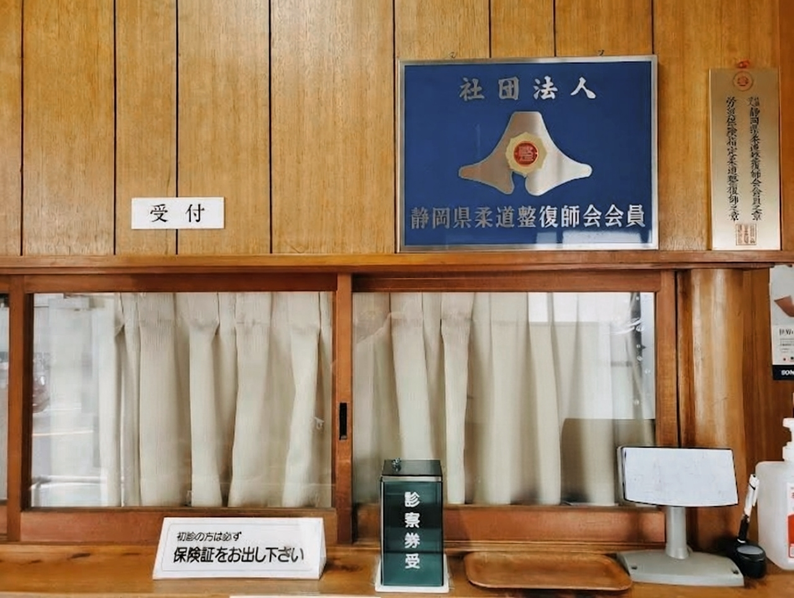
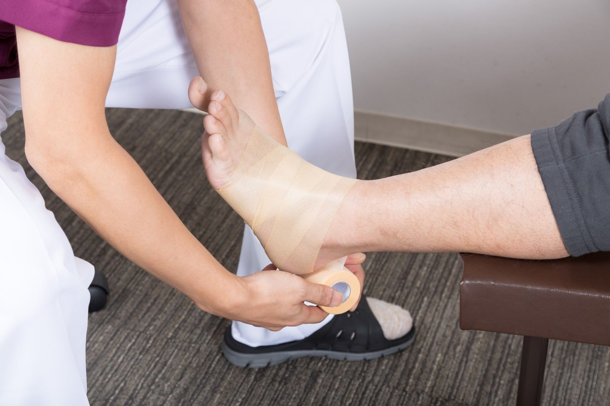
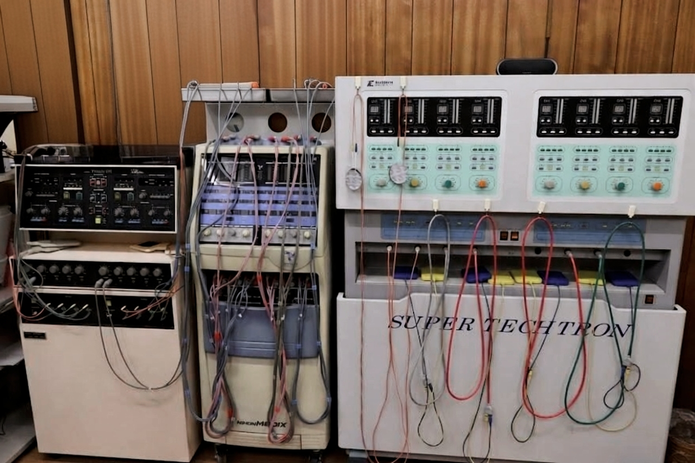

REASONS
当院の3つの特徴
安心の国家資格者対応
当院は「静岡県柔道整復師会」の会員です。 厚生労働大臣認可の国家資格を持つ専門家が、 確かな知識と技術で責任を持って担当いたします。
丁寧な問診と状態説明
痛みの原因はどこにあるのか、 どのような処置を行うのかを分かりやすくご説明します。 ご納得いただいてから施術に入ります。
充実した設備と清潔な院内
各種物理療法機器を完備し、 症状に合わせた的確なアプローチが可能です。 また、ベッドやタオルの交換など 衛生管理を徹底しています。
院内の雰囲気
落ち着いた院内環境の中で、 安心して施術を受けていただけます。
清潔な施術スペース

受付・柔道整復師会会員

確かな技術での処置
APPROACH
当院の施術について
手技療法
柔道整復術は、
骨折・脱臼・打撲・捻挫・挫傷などの外傷に対し、
整復・固定・後療を行う伝統ある施術法です。
当院では、視診・触診・各種徒手検査を通じて 損傷部位の状態を丁寧に評価し、 その状態に応じた適切な処置を行います。
組織の緊張や関節の動きを確認し、
回復を妨げない範囲で調整を行い、
自然治癒力を引き出していきます。

物理療法
当院では、 電気療法や温熱療法、超音波療法などの 各種物理療法を行っています。
痛みの軽減や血流の改善を図り、 回復しやすい身体づくりをサポートします。
症状や状態に合わせて、 手技療法と組み合わせながら 最も適切な方法を選択いたします。
FLOW
ご来院から施術までの流れ
初めての方でも安心してご来院いただけるよう、 当院での基本的なステップをご紹介します。
受付・予診票記入
まずは受付にお声掛けください。
保険証を確認後、現在の症状をご記入いただきます。
丁寧な問診と確認
患部の状態を視診・触診等で確認し、痛みの原因を探ります。
必要な固定等の処置も行います。
手技によるアプローチ
状態を分かりやすく説明し、ご納得いただいた上で、
手技による丁寧な施術を行います。
物理療法・アドバイス
症状に合わせ機器を用いた物理療法を行い、
日常生活での注意点や今後の通院目安をお伝えします。
取扱業務・保険適用
以下の急性のケガ・外傷には、健康保険が適用されます。
※ご来院の際は必ず保険証をご持参ください。
-
骨折・脱臼
（応急手当以外は医師の同意が必要） - 打撲（打ち身）
- 捻挫（関節をひねった）
- 挫傷（肉離れ）
※労働者災害補償保険（労災）、自動車損害賠償責任保険（交通事故）も取り扱っております。
よくあるご質問
Q. 費用はどのくらいかかりますか？
健康保険が適用される場合、負担割合によりますが、
初回は1,000円〜2,000円程度、2回目以降は数百円程度になることが多いです。
（※テーピング等の衛生材料費が別途かかる場合があります）
Q. 予約は必要ですか？
ご予約は不要です。
ご来院いただいた順番にご案内いたしますので、
受付時間内に直接お越しください。
Q. どんな服装で行けばいいですか？
患部を出しやすい、動きやすい服装が理想です。
お着替え（ハーフパンツ等）のご用意もございます。
ACCESS
受付時間・アクセス
受付時間・施術日
【午前】 8:30 〜 12:00
【午後】15:00 〜 19:00
【午前のみ】 8:00 〜 12:00
日曜日、祝日
静岡市清水区
上杉接骨院
〒424-0016
静岡県静岡市清水区天王西4-25
専用駐車場をご用意しております。
お車でのご来院も安心です。